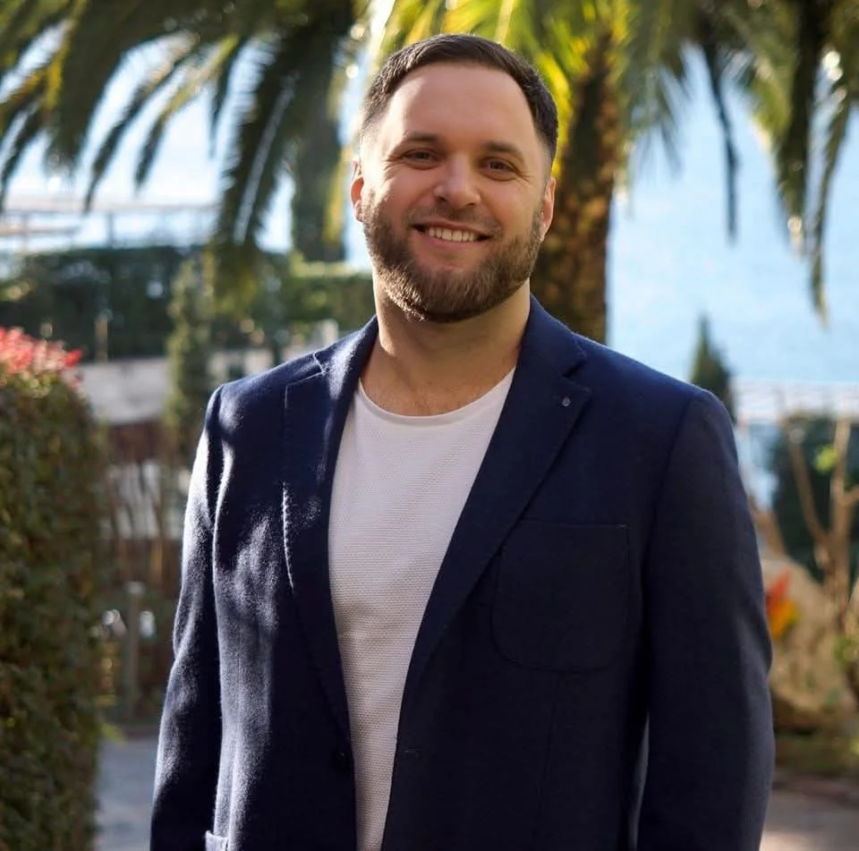
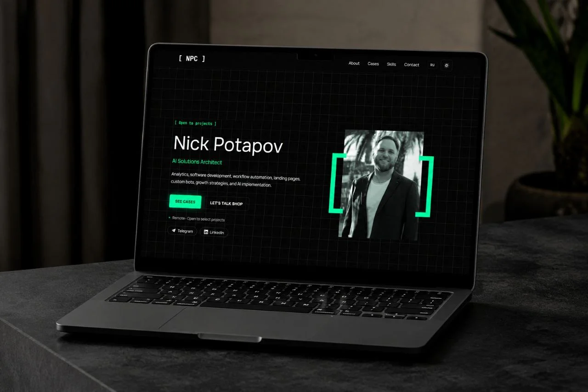
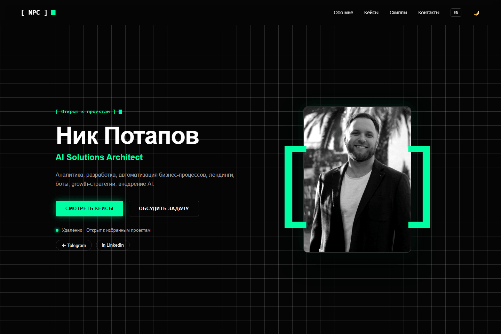
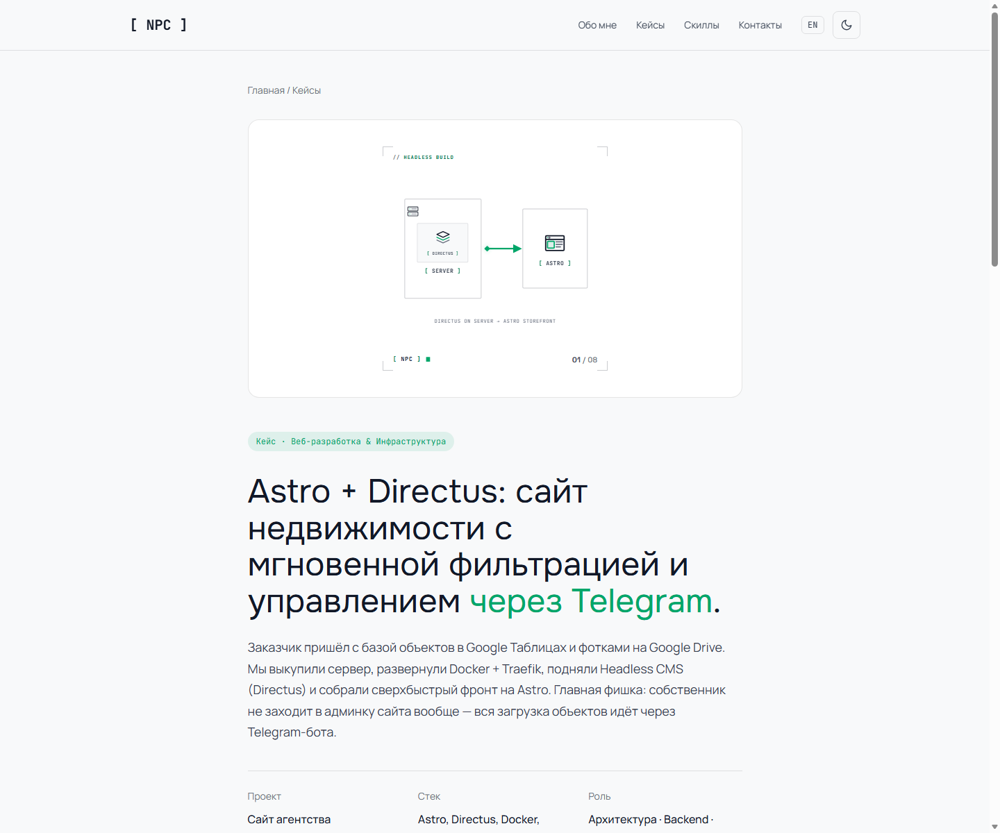
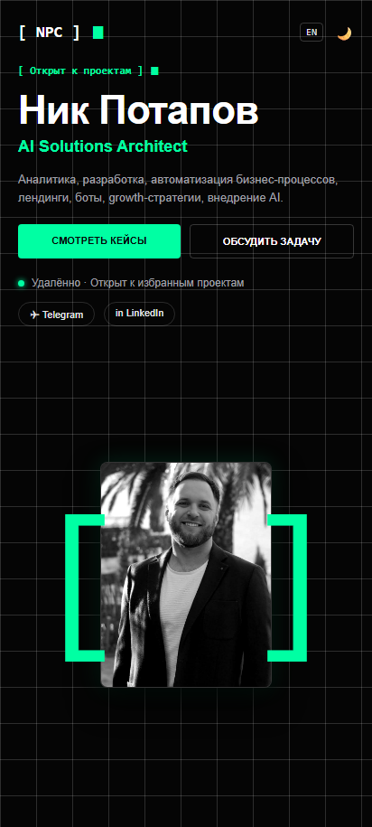
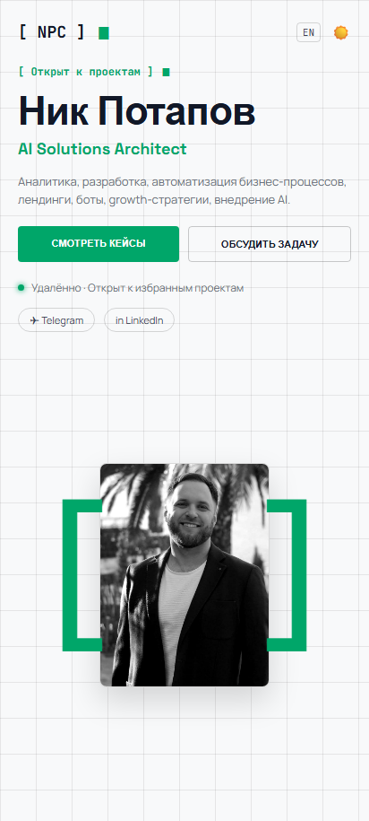

Designing an engineering-brutalist portfolio site and automation showcase for Nick Potapov — an AI Solutions Architect and business-growth expert.


Four foundational elements that the entire visual language and character of Nick Potapov's portfolio is built on.
A mathematical 40×40px grid sets the rhythm of an engineer's drafting board and guarantees perfect alignment of every block.
Square brackets set in JetBrains Mono highlight key entities, the logo, and section tags in the accent mint color.
The terminal glyph ▮ and a pulsing green dot signal the status of a live system, ready for new projects.
Interactive vector diagrams clearly show the data-flow scheme between Telegram, the CMS, and the frontend.
In games, an NPC is a bot with no free will, stuck in an endless routine. In business, founders and teams often turn into the same kind of NPC: spending hours manually transcribing invoices, copy-pasting text, and filling out spreadsheets. Nick replaces that routine with AI agents, giving people back their role as the Main Character of their own company.
We designed the site not as yet another generic résumé, but as a high-precision tool for filtering and converting target B2B clients.
Clients are tired of abstract slogans. Every case study needs to clearly show the real data-flow scheme, the stack, and a working screen.
Terminal brutalism (monospace type, a 40×40 grid, [ NPC ] brackets) screens out cheap, casual clients and attracts mature B2B ones.
Over 70% of visitors open the site on a smartphone. Instead of long, tedious web forms — an instant handoff to a qualifying Telegram bot.
Why Nick's positioning wins over template agencies and scattered freelancers.
| Criterion | Typical AI Agencies | Freelance Marketplace Talent | ⭐ Nick Potapov (NPC) |
|---|---|---|---|
| Visual style | The same neon look, purple 3D spheres | Dull Notion pages or a PDF résumé | Engineering brutalism, a mathematical 40px grid |
| Case presentation | Abstract phrases like "implemented AI end-to-end" | A task list with no verified figures | 8 working case studies broken down as "Before / After / Result" |
| Site speed | Bloated scripts, slow load times | Average speed | Loads in under 0.5s, 100/100 on Google PageSpeed |
| Entry point | A 7-field form with a call scheduled a week out | Chat on the marketplace | An instant Telegram bot with smart task routing |
The system is built on high contrast, readability, and instant switching between visual themes.
A distinctive geometric grotesk for first- and second-level headings.
Maximum comfort for reading long case descriptions, at a 1.6 line height.
A monospace typeface for the [ NPC ] brackets, tags, and metrics.
Real screens from Nick Potapov's site, presented in elegant, minimal frames with no unnecessary visual noise.




Every control, button, and card is sized for thumb reach (touch targets from 48px up). Native horizontal scrolling for case studies gives it the feel of a fast mobile app.
Every case study on the site has a direct link, an interactive animation, and a full architecture breakdown.
A real-estate site with instant filtering and listing intake straight from Telegram.
A realtor's voice notes with photos are auto-parsed into CRM cards via AI.
Smart rewriting and distribution of listings across dozens of social platforms in 2 clicks.
Managing the entire property database right from a smartphone, no bulky CRM needed.
Generating 13 unique formats in 6 languages from a single draft, via a neural network.
A digital host's assistant for in-person games, with automatic player ranking tables.
An interactive restaurant menu as a Telegram Mini App, built on Netlify and Supabase.
Smart recognition of photographed paper invoices, routing the data into spreadsheets.
Engineering brutalism, instant load speed, and a transparent showcase of bot architecture built an uncompromising expert image and set Nick Potapov apart from hundreds of template agencies.